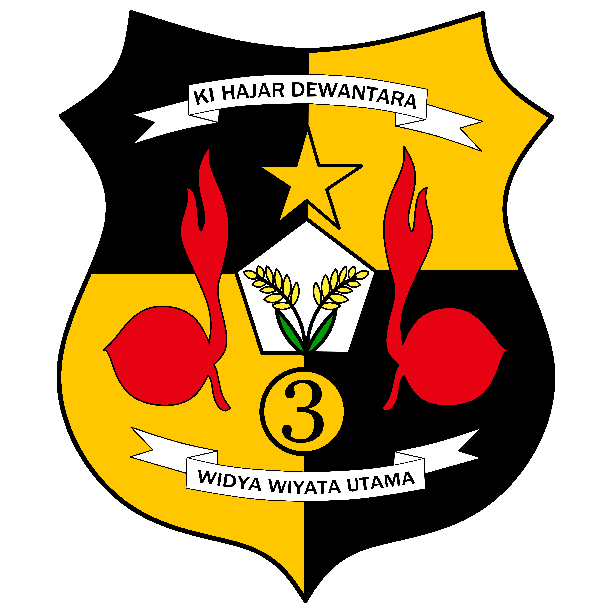

KI HAJAR DEWANTARA
WIDYA WIYTA UTAMA
Ambalan Putra Gugus Depan Ciamis 01.135 Pangkalan SMA NEGERI 3 CIAMIS.
Ambalan Putra yang memiliki ciri kekuatan, kecerdasan, dan rendah hati yang harus tertanam pada setiap Anggotanya sesuai dengan filosofi Padi berisi yang merundup.
Ambalan Ki Hajar Dewantara adalah sebuah nama yang diambil dari
nama seorang Pahlawan Nasional, yang sangat terkenal akan jasa-jasanya pada Negara terutama dalam bidang Pendidikan.
Beliaulah Bapak Pendidikan Indonesia yang tanggal lahir beliaupun menjadi hari Pendidikan Nasional, yang kemudian menjadi hari lahirnya Ambalan Ki Hajar Dewantara.
RADEN AJENG KARTINI
GHANESA CAKRA UTAMA
Ambalan Putri Gugus Depan Ciamis 01.136 Pangkalan SMA NEGERI 3 CIAMIS memiliki 2 Unit yaitu Unit Cakra dan Unit Utama yang menjadi pondasi Ambalan R.A KARTINI. Ambalan Putri yang memiliki ciri kelembutan, kecerdasan, dan percaya diri yang harus tertanam pada setiap Anggotanya sesuai dengan filosofi lilin dengan api yang menyala
FOTO KEGIATAN